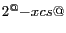
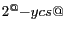

| [ < ] | [ > ] | [ << ] | [ Up ] | [ >> ] | [Top] | [Contents] | [Index] | [ ? ] |
Chapter summary:
vidlis a library for managing video streams.The purpose of this library is to provide a unified interface for reading and writing video data in VXL. Unlike the previous vidl library, this library treats video as a data stream. The input streams are derived from
vidl_istreamand can provide data from disk or from a live capture (a camera, for example). The output streams are derived fromvidl_ostreamand can write data to disk. Potentially, output streams could also display on a screen or transmit an internet video stream, but these capabilities are not implemented yet.
| [ < ] | [ > ] | [ << ] | [ Up ] | [ >> ] | [Top] | [Contents] | [Index] | [ ? ] |
An example of simple, compact video transcoding with
vidl is given below.
#include <vidl/vidl_image_list_istream.h>
#include <vidl/vidl_ffmpeg_ostream.h>
...
// create an input stream
vidl_image_list_istream my_istream("*.png");
// create an output stream
vidl_ffmpeg_ostream my_ostream("video.avi",
vidl_ffmpeg_ostream_params()
.encoder( vidl_ffmpeg_ostream_params::DVVIDEO )
.frame_rate( 29.95 ) );
// transcode the video
vidl_frame_sptr frame;
while (bool(frame = my_istream.read_frame()) &&
my_ostream.write_frame(frame) );
|
This example has three parts: open an input stream, open an output stream, and transfer the data. The streams are opened by constructing a stream instance. The constructor arguments are different for each stream type.
In the example, the vidl_image_list_istream is
constructed with a file glob string (See vul_file_iterator
for details).
The input video will consist all PNG files in the current directory
sorted alphanumerically by file name.
The images should all have the same size because the output
format requires this.
The vidl_ffmpeg_ostream is constructed with
the name of the output video file and a parameters class
that specifies all the encoding parameters.
The vidl_ffmpeg_ostream_params class uses a
design that allows the parameters to be set on an
anonymous instance by chaining together function calls
that each return a reference to the instance to the next function.
Here the encoder enum is set to DVVIDEO and
the frame rate is set to 29.95 frames per second.
All other parameters take default values.
In the transcoding loop, all frames are read from the
input stream one at a time.
Each frame is written to the output stream until an invalid
frame is detected indicating the end of the input stream.
All of this processing is done within the loop condition test,
and the body of the loop is empty
(there are, of course, several other ways to structure this code).
The read_frame() member function advances to the
next frame in the input sequence and then returns that frame.
It returns a null smart pointer when no more frames are available.
The cast to bool causes the loop to terminate when
the end of input is reached (i.e. a null pointer evaluates to false).
Because of lazy evaluation, write_frame() is only
called on the output stream when the frame is valid.
This member function writes the frame to the output and
returns true on a successful write.
Thus, a failed write will also terminate the loop.
The streams are closed when the stream instances go out
of scope and are destroyed.
| [ < ] | [ > ] | [ << ] | [ Up ] | [ >> ] | [Top] | [Contents] | [Index] | [ ? ] |
This design has the following advantages over the old VXL video
library (now called vidl1) that treated videos as container objects.
Various stream subclasses are used to interface with different types
of video streams.
Note that these are no longer called codecs.
The codec in the old vidl1 library was somewhat of a misnomer.
A codec (COder/DECoder) provides encoding and decoding algorithms for
a specific video compression format (e.g. MPEG2, DV, H.264, etc.).
vidl (and its predecessor) provided wrappers to other APIs
(like DirectShow and FFMPEG) which may encode or decode with a variety
of codecs.
Each vidl_istream and vidl_ostream subclass is a wrapper
for another video API that may or may not provide encoding, and may
support many different codecs. For example,
vidl_ffmpeg_istream provides a input using the FFMPEG
library. The FFMPEG library can open a large variety of video file
formats (avi, mpeg, etc.) and decode using an even larger variety of
codecs (MPEG2, MPEG4, MJPEG, H.264, Cinepak, etc.).
The video stream design also allows for streams that receive images from live video feeds. This could be from a camera, network video feed, or other source. Thus, video capture and video transcoding are both accomplished by directing an input stream into an output stream.
Several APIs that vidl interfaces allow for both input
and output.
For these there are both a corresponding vidl_istream and
vidl_ostream.
Other APIs are designed only for one or the other.
For example, video capture APIs (like libdc1394) only provide an
interface for input, so only a vidl_istream is needed.
The separation of input and output was not allowed by the previous
vidl library design.
| [ < ] | [ > ] | [ << ] | [ Up ] | [ >> ] | [Top] | [Contents] | [Index] | [ ? ] |
All vidl input streams are derived from the abstract base
class vidl_istream.
Likewise all output streams are derived from vidl_ostream.
Once a stream is created, all critical operations are controlled by
invoking base class virtual functions.
This polymorphic design allows video processing algorithms
to operate on any combination of input and output streams
configurable at run time.
The following subsections give an overview of the input and output stream base classes followed by an overview of the different derived stream types.
| [ < ] | [ > ] | [ << ] | [ Up ] | [ >> ] | [Top] | [Contents] | [Index] | [ ? ] |
The vidl_istream API defines several methods to access
properties of the stream, control the stream state, and access
frame data.
The functionality of most methods is obvious from the name.
width() and height() return the video resolution in pixels,
and frame_rate() returns the video frame rate in frames per second.
Frame rate may not be define in some streams,
like a sequence of image files, and 0 is returned in this case.
format() returns the vidl_pixel_format of the frames.
num_frames() returns a count of the number frames in
a finite length video clip or -1 in a live video stream.
Note that some video files do not store an accurate count of all
video frames.
In this case, num_frames() must scan the entire video to
count the number of frames.
Accessing the entire video can be costly, so use this function
only when you really need an accurate frame count.
frame_number() returns the current frame number in
the sequence of video frames (starting at 0 for the first frame).
The method is_open() returns true when a video stream
has been opened successfully and has not been closed by
calling close().
The method is_valid() has a slight different meaning.
A video stream is valid when its frame counter refers to a valid
video frame.
Video streams should open in an invalid state, referring
to the position before the first valid frame.
When first opened, frame_number() should return
static_cast<unsigned int>(-1) to indicate the invalid
frame before frame 0.
The stream is also invalid when it advances past the last valid frame.
The advance() method advances the frame counter and may
invalidate the previously release frame, but does not necessarily
acquire or decode the next frame.
If the advance was successful it returns true.
The current_frame() method returns a smart pointer to
the current frame, acquiring or decoding it
the first time this method is called.
The read_frame() method advances the frame counter
and returns the resulting current frame in one function call.
Live streams only support advancing through frames
sequentially, but most other streams allow traversal forward
or backward through the video to find a particular frame.
This operation is called seeking.
If an input stream supports seeking, the method
is_seekable() will return true.
If supported, the method seek_frame(frame_number)
will seek forward or backward to set the current frame
number to frame_number.
Keep in mind that, even when supported, seeking is almost
always much slower than advancing.
For some video decoders it may even be error prone.
Try to avoid seeking when possible.
At the time of this writing, the following input stream classes have been implemented.
vidl_image_list_istreamTreats an ordered list of image file paths as a video stream.
vidl_ffmpeg_istreamUses the FFMPEG library to decode many common video file formats.
vidl_v4l_istreamUse a video for Linux input stream.
vidl_dshow_live_istream Use the DirectShow API to stream video directly from camera and frame-grabber devices in Windows using native Windows codecs.
vidl_dshow_file_istream Use the DirectShow API to encode video files in Windows using native Windows codecs
vidl_dc1394_istreamUse libdc1394 v2 to stream video directly from IEEE 1394 (firewire) based cameras (Windows not supported yet)
| [ < ] | [ > ] | [ << ] | [ Up ] | [ >> ] | [Top] | [Contents] | [Index] | [ ? ] |
The interface for output streams is much simpler than for input
streams.
Once an output video stream is open, its sole job is to accept
frames and append them to the output video.
The key method is write_frame(frame) which takes a
frame smart pointer and
tries to write it to the end of the output stream.
It returns true if successful.
The other methods are is_open() which returns true
if the stream is open for writing, and close()
which closes the stream.
The most complicated part of using output streams is
typically their construction.
The constructors for output streams differ depending on
the particular stream type, but tend to involve many
parameters especially when video encoding and compression
are involved.
When the number of parameters is very large,
a special parameters struct may be used to encapsulate the
parameter collection.
For example, vidl_ffmpeg_ostream_params.
At the time of this writing, the following output stream classes have been implemented.
vidl_image_list_ostream Writes a video to disk as a sequence of numbered image files using any image file format supported by vil.
vidl_ffmpeg_ostream Uses the FFMPEG libraries to encode to many common video file formats with many encoding options for video quality and compression.
| [ < ] | [ > ] | [ << ] | [ Up ] | [ >> ] | [Top] | [Contents] | [Index] | [ ? ] |
The image list streams are the simplest streams in vidl.
They require no third party libraries and rely only on vil.
The vidl_image_list_istream treats a vector of paths
to image files as a video (with unknown frame rate).
The stream is constructed with a vector of paths or a file glob
string that is used to match files on disk and produce a vector
of paths in alphanumeric order.
When the stream is "opened", each file path is tested to see if
vil can open it as an image (image data is not read yet).
The first frame defines the video resolution.
Any frame that does not open in vil as a vidl
compatible format or does not match the video resolution is
ignored.
The vidl_image_list_ostream works in the opposite way.
Opening a stream requires an output directory, a name format,
a file format, and an initial index.
For each frame that is written to the stream, vil is used
to write an image file to the specified directory in the specified
image file format.
The name of the files is produced by applying the frame number,
starting at the specified initial index, to the name format
using printf syntax.
For example
vidl_image_list_ostream my_ostream("video","frame%03d","tiff",7);
|
will write TIFF images with the following paths
video/frame007.tiff video/frame008.tiff video/frame009.tiff video/frame010.tiff ... |
| [ < ] | [ > ] | [ << ] | [ Up ] | [ >> ] | [Top] | [Contents] | [Index] | [ ? ] |
FFMPEG is a collection of
cross-platform, open source, C libraries for encoding and
decoding video.
It is primarily used on Linux and Mac OS X, but it can be compiled
for Windows too.
It requires GCC and will not compile with Microsoft's compiler.
The primary libraries are libavcodec and libavformat.
Newer versions of FFMPEG also use libavutil and libswscale.
For several years prior to the version 0.5 release, FFMPEG
evolved continually with an ever-changing API
but no formal releases.
vidl has tried to support several "versions" of the
API by supplying multiple stream implementations.
The selection of implementation and its interface
with FFMPEG is encapsulated and hidden
from the public vidl stream interfaces.
Going forward, vidl will try to support any official
release versions of FFMPEG.
If official release versions continue to be few and far between,
a subversion snapshot of FFMPEG may also be supported
and updated only when the need arises for new features.
In the future, a version of FFMPEG may also be added to
v3p to make a common version easily accessible
to all VXL users.
Using the vidl_ffmpeg_istream is trivial.
The constructor only requires the path to a video file.
FFMPEG can decode almost any video file format with
any video codec that is thrown at it.
Be warned that some malformed files will still open
but may produce errors during seeking.
Using the vidl_ffmpeg_ostream is also
straightforward.
The constructor requires the path to the output
video file and a vidl_ffmpeg_ostream_params
struct to specify the encoding parameters.
The vidl_ffmpeg_ostream_params is a struct that
mirrors the enormous set of parameters available to
FFMPEG for encoding.
The current set of parameters is not complete an will
need to be updated in the future.
Leaving most of the parameters at their default value
will produce reasonable results in most cases.
The most important parameters to set are
encoder, frame rate, and bit rate.
The encoder is the selection of codec to use from those
supported by FFMPEG.
An enum specifies a list of codecs allowed by
vidl.
This list needs to be expanded and should ultimately
vary depending on the FFMPEG configuration since some
codecs are optionally enabled during FFMPEG compilation.
The frame rate is a double specifying the number
of frames per second in the output video.
The bit rate is an unsigned int specifying the
target compression level in number of bits per second
of video.
Another set of important parameters is the frame size,
the width (ni) and height (nj) of each image.
However, vidl_ffmpeg_ostream does not require
that you specify the frame size directly.
Instead, it uses a delayed stream opening scheme.
The constructor stores the parameters but does not
immediately open the stream.
When the first frame is written, the size of this frame
is used to specify the size of the output video and
the output stream is opened at this point.
If necessary, one can force the stream to open without
writing a frame by calling the open() method on
the stream.
| [ < ] | [ > ] | [ << ] | [ Up ] | [ >> ] | [Top] | [Contents] | [Index] | [ ? ] |
Not written yet.
| [ < ] | [ > ] | [ << ] | [ Up ] | [ >> ] | [Top] | [Contents] | [Index] | [ ? ] |
There are several cameras that capture and transmit video over the 1394 (aka Firewire) interface. Many of these cameras conform to a standard of camera configuration and streaming parameters. This standard is known as the IIDC or DCAM Specifications. Note that this refers to live capture 1394 cameras and does not generally include camcorders that transfer saved video using the 1394 interface.
There are several driver packages that implement the
IIDC Specifications.
vidl supports an open source package called
libdc1394.
The vidl_dc1394_istream uses the libdc1394 version 2
API to capture live video from 1394 cameras.
libdc1394 currently runs on linux and Mac OS X.
It may also run on Windows in the future.
Other examples of IIDC camera APIs are the
CMU 1394 Driver
for Windows and the Point Grey
FlyCapture SDK
for Windows.
Point Grey adds additional features beyond the standard
for its own line of cameras.
Separate vidl_istream classes could be written for
these in the future.
This vidl_dc1394_istream is opened with a parameters
struct called vidl_iidc1394_params that specifies
all the IIDC parameters needed to configure the camera.
Since the parameters are standard and not specific to libdc1394,
the vidl_iidc1394_params struct is intended to be
shared with any other IIDC 1394 stream classes written in the future.
Additional parameters that are specific to libdc1394 are
kept out of vidl_iidc1394_params.
Namely, the num_dma_buffers parameter is passed in
separately when opening the stream.
This parameter specifies the number of frame buffers to use
for Direct Memory Access (DMA) transfer.
libdc1394 will create a separate thread to continually read
frames into these buffers asynchronously from the main
program.
Refer to the libdc1394 documentation for details.
The vidl_iidc1394_params struct also contains a
nested struct called valid_options.
This struct is used to represent the available devices
and their parameters found by probing the 1394 bus.
The vidl_dc1394_istream class has a static
member function called valid_params that
can be used to probe the bus and populate this struct.
| [ < ] | [ > ] | [ << ] | [ Up ] | [ >> ] | [Top] | [Contents] | [Index] | [ ? ] |
Not written yet.
| [ < ] | [ > ] | [ << ] | [ Up ] | [ >> ] | [Top] | [Contents] | [Index] | [ ? ] |
The vidl_frame_sptr is a data structure used to transport video
frame data from a vidl_istream to a vidl_ostream.
The vidl_frame contains a pointer to the frame buffer,
the image resolution, the pixel format, and may eventually contain
a time stamp.
A vidl_frame is more restrictive than a vil_image_view
since it requires contiguous memory and is limited in pixel data types.
However, it also handles many pixels formats not supported by
vil, such as those with sub-sampled chrominance
(i.e. YUV 4:2:2).
In some cases the vidl_frame data can be wrapped by a
vil_image_view, but usually this is not a good idea.
The vidl_frame should be considered a volatile data structure.
The image buffer is only guaranteed to be valid until the next call of
vidl_istream::advance().
The istream will keep a pointer to the released frame and then
invalidate it before reusing memory.
Use the functions in vidl_convert.h to obtain a non-volatile
vil_image_view.
More details are given below in the section on conversions.
| [ < ] | [ > ] | [ << ] | [ Up ] | [ >> ] | [Top] | [Contents] | [Index] | [ ? ] |
The supported pixel formats are enumerated in
vidl_pixel_format enum.
The naming convention is VIDL_PIXEL_FORMAT_color_num[P],
where color is the color encoding,
num is the bit number,
and the P character is optionally appended to indicate
a planar encoding.
There are also two special formats.
VIDL_PIXEL_FORMAT_UNKNOWN is used when
the pixel format is not known or does not matter.
VIDL_PIXEL_FORMAT_ENUM_END is an end of enum marker and
should never be used in a vidl_frame.
This marker is used to count the number of pixel formats.
All new formats should be added before the end marker in the enum.
The color of a pixel format specifies the color encoding.
A separate enum named vidl_pixel_color enumerates the
available color modes.
These are
VIDL_PIXEL_COLOR_MONOMonochrome or grayscale (1 color channel)
VIDL_PIXEL_COLOR_RGBRed Green Blue (3 color channels)
VIDL_PIXEL_COLOR_RGBARed Green Blue Alpha (4 color channels)
VIDL_PIXEL_COLOR_YUVLuma Chroma-Blue Chroma-Red, aka YCrCb (3 color channels)
The multichannel color formats are not always encoded in the order
given above.
The characters are permuted in the vidl_pixel_format
names to indicate the actual ordering.
For example, BGR indicates RGB color stored in reverse order.
The bit number indicates how the bits are laid out.
This is most important in packed color frames where a group
of 2 or 4 pixels is encoded together and differing numbers of bits are
added to different color channels.
When no packing occurs, the number in the vidl_pixel_format
name is the total number of bits
(i.e. RGB_24 is RGB with 8 bits for each channel).
When the number of bits per channel is different, the standard
chroma sub-sampling numbering is used (i.e. 422 for 4:2:2).
See
Wikipedia
for more details.
A separate enum named vidl_pixel_arrangement
enumerates the available arrangements.
These are
VIDL_PIXEL_ARRANGE_SINGLEEach pixel is listed in single file with equal bit allocation to each channel (e.g. RGBRGBRGBRGBRGB...)
VIDL_PIXEL_ARRANGE_PACKEDSmall blocks of data represent a group of pixels and bit allocation generally differs between channels
VIDL_PIXEL_ARRANGE_PLANARAll data from one channel is provided before providing all data from the next channel (e.g. RRRR... GGGG... BBBB...). Chroma sub-sampling may still apply.
VIDL_PIXEL_ARRANGE_PALETTE(Not currently used) Each pixel is an index into a look-up table of colors.
| [ < ] | [ > ] | [ << ] | [ Up ] | [ >> ] | [Top] | [Contents] | [Index] | [ ? ] |
To determine properties of each pixel type, vidl relies
heavily on template specialization and meta-programming.
The template vidl_pixel_traits_of<FMT> is specialized for
each pixel format FMT.
The traits class provides several static members that describe the
properties of each format.
The trait specializations are created using the macro vidl_pt_mac.
This macro lets all the properties appear in a nice table.
It also makes it easy to add a new pixel format.
The following is a subset of the pixel traits table found in
vidl_pixel_format.h.
// format name type bpp color arrange xcs ycs // ------ --------- ---- --- ------- ------- --- --- vidl_pt_mac( UNKNOWN, "unknown", void, 0, UNKNOWN, UNKNOWN, 0, 0 ); vidl_pt_mac( RGB_24, "RGB 24", vxl_byte, 24, RGB, SINGLE, 0, 0 ); vidl_pt_mac( RGB_24P, "RGB 24P", vxl_byte, 24, RGB, PLANAR, 0, 0 ); vidl_pt_mac( BGR_24, "BGR 24", vxl_byte, 24, RGB, SINGLE, 0, 0 ); vidl_pt_mac( RGBA_32, "RGBA 32", vxl_byte, 32, RGBA, SINGLE, 0, 0 ); vidl_pt_mac( YUV_444P, "YUV 444P", vxl_byte, 24, YUV, PLANAR, 0, 0 ); vidl_pt_mac( YUV_422P, "YUV 422P", vxl_byte, 16, YUV, PLANAR, 1, 0 ); vidl_pt_mac( YUV_420P, "YUV 420P", vxl_byte, 12, YUV, PLANAR, 1, 1 ); vidl_pt_mac( YUV_410P, "YUV 410P", vxl_byte, 10, YUV, PLANAR, 2, 1 ); vidl_pt_mac( YUYV_422, "YUYV 422", vxl_byte, 16, YUV, PACKED, 1, 0 ); vidl_pt_mac( MONO_1, "Mono 1", bool, 1, MONO, SINGLE, 0, 0 ); vidl_pt_mac( MONO_8, "Mono 8", vxl_byte, 8, MONO, SINGLE, 0, 0 ); vidl_pt_mac( MONO_16, "Mono 16", vxl_uint_16, 16, MONO, SINGLE, 0, 0 ); |
The meaning of each column in the pixel traits table are as follows.
formatThe format identifier symbol.
Appended to VIDL_PIXEL_FORMAT_,
this should match the vidl_pixel_format enum value.
nameThe string name of the format for human readability.
typeThe data type to be used when converting to a vil_image_view.
bppThe number of bits per pixel.
Not always an even multiple of sizeof(type) because pixels
may be packed or sub-sampled in some planes
(see xcs and ycs).
colorThe color format. Appended to VIDL_PIXEL_COLOR_ this
determines the vidl_pixel_color.
arrangeThe pixel arrangement. Appended to VIDL_PIXEL_ARRANGE_
this determines the vidl_pixel_arrangement.
xcsThe X color sub-sampling factor. In YUV color space, the U and V
channels have a horizontal resolution (ni) that is
 times that of the Y channel.
ycsThe Y color sub-sampling factor. In YUV color space, the U and V
channels have a vertical resolution (nj) that is
 times that of the Y channel.
A new pixel format may be introduced by simply adding an entry in this
table and a corresponding enum addition to
vidl_pixel_format.
The traits of a pixel format are used in the automatic generation of
conversion routines.
The ultimate goal of the vidl pixel format framework is that
new formats added to the table should automatically work (possibly slowly)
without writing any additional conversion routines.
| [ < ] | [ > ] | [ << ] | [ Up ] | [ >> ] | [Top] | [Contents] | [Index] | [ ? ] |
The template specializations used to define traits are very useful at
compile-time, but less useful given a pixel format that is not known
until run-time.
A second (non-templated) struct named vidl_pixel_traits
is available to dynamically hold traits at run-time.
The function vidl_pixel_format_traits provides
dynamic look-up of traits from a vidl_pixel_format variable.
// find the pixel format of a frame
vidl_pixel_format format = my_frame_sptr->pixel_format();
// look up the pixel traits
vidl_pixel_traits pt = vidl_pixel_format_traits(format);
// print out some information
vcl_cout << "The frame has format " << pt.name
<< " with " << pt.bits_per_pixels << " bits per pixel"
<< " and " << pt.num_channels << " channels" << vcl_endl;
|
To simplify this process there are several convenience functions, such
as vidl_pixel_format_bpp, to directly look up a pixel trait
given the format without the need for the traits struct.
There is also a vcl_ostream operator for vidl_pixel_format
so that the human readable string name is printed.
The following example
vidl_pixel_format format = VIDL_PIXEL_FORMAT_RGB_24; vcl_cout << "pixel format is " << format << vcl_endl; |
produces the output
pixel format is RGB 24 |
There is also a function that provides a look up of a pixel format
from its string name.
Use vidl_pixel_format_from_string for this purpose.
The expression
vidl_pixel_format_from_string("RGB 24") == VIDL_PIXEL_FORMAT_RGB_24
|
should evaluate to true.
| [ < ] | [ > ] | [ << ] | [ Up ] | [ >> ] | [Top] | [Contents] | [Index] | [ ? ] |
When passing a frame from an input stream to an output stream,
pixel format conversion is generally not something the user needs
to worry about.
The vidl_istream should provide a vidl_frame_sptr
that uses whatever pixel format is native to the video data.
If the vidl_ostream requires a different pixel format,
then it performs the required conversion automatically.
If for some reason manual conversion is required, the appropriate
functions are found in vidl_convert.h.
The function is called vidl_convert_frame,
and it comes in two forms.
The first
bool vidl_convert_frame(const vidl_frame& in_frame,
vidl_frame& out_frame);
|
takes an input frame and an output frame. The output frame must have the appropriate size and pixel format for the output. If the size is not appropriate then the function returns false. This version is useful when you want to store the converted data into an existing memory buffer; for example, reusing the same output frame for each new input frame. The second form of the function
vidl_frame_sptr vidl_convert_frame(const vidl_frame_sptr& in_frame,
vidl_pixel_format format);
|
takes a smart pointer to an input frame and allocates new memory for the output frame using the specified pixel format. If the conversion is possible, a smart pointer to the new frame is returned. Otherwise, a null smart pointer is returned. This version requires less preparation by the user, but does not allow for the reuse of frame memory.
| [ < ] | [ > ] | [ << ] | [ Up ] | [ >> ] | [Top] | [Contents] | [Index] | [ ? ] |
One case where the user usually does want to convert a frame
is conversion to and from a vil_image_view.
This type of conversion is needed to do any image processing
on the data.
There is more than one way to do such a conversion.
The fastest way, if possible, is to share the memory and
wrap the vidl_frame in a vil_image_view or vice versa.
Wrapping is only possible when the memory layout of the vil
memory format is compatible with a vidl pixel format.
For writing to output streams, wrapping is usually safe
because the data is immediately used and then no longer needed.
The function vidl_convert_to_frame takes a
vil_image_view_base_sptr and always tries first to wrap
the memory.
If wrapping fails, new memory is allocated and the image data is
copied (and converted if necessary) into that memory.
The result is returned as a vidl_frame_sptr.
When reading frames from video, wrapping can be more dangerous.
Processing images from video often involves multiple frames.
To reduce repeated reallocation of memory, most input streams
will reuse the same memory.
A member function on the vidl_frame allows an input
stream to invalidate the frame object it previously
released in order to reclaim the memory for the next frame.
The invalidated frame will now have a null pointer to image data,
but any vil_image_view that was sharing the memory
will not be notified.
The image sharing the memory will be overwritten when the next
frame is read from the video stream.
It is safer to copy memory when converting a frame to an image,
but it is potentially much slower than wrapping.
Functions are provided for both copy conversion and
wrapping conversion.
The appropriate conversion depends on the situation.
When in doubt, the safest way to get a vil_image_view
from a vidl_frame is by copying with
bool vidl_convert_to_view(const vidl_frame& frame,
vil_image_view_base& image,
vidl_pixel_color require_color);
|
This function resizes the image (if necessary) and then copies
the frame data into it with the appropriate conversion (if necessary).
The conversion is based on the data type of the image view.
The last function argument, require_color, is optional and
defaults to VIDL_PIXEL_COLOR_UNKNOWN.
In the default case, the color encoding is kept the same as
the input frame.
If require_color is specified, then it will be used as the
resulting color encoding.
Videos are often stored and transmitted in YUV, but vil
images are usually assumed to be in RGB.
The require_color is used to force that conversion.
vidl_convert_to_view will return true if the conversion
is successful.
The fastest way to obtain a vil_image_view is by wrapping.
The function vidl_convert_wrap_in_view takes a
vidl_frame and tries to wrap its memory with an
appropriate image view.
If the wrapping is possible, the function returns a
vil_image_view_base_sptr to the view.
Otherwise, it returns a null smart pointer.
| [ < ] | [ > ] | [ << ] | [ Up ] | [ >> ] | [Top] | [Contents] | [Index] | [ ? ] |
The pixel traits table is used to automatically generate conversion
routines between any pair of listed pixel formats.
There are two types of automatically generated conversion
functions.
The first, and simplest, is applied when the input pixel
format matches the output pixel format.
In this case, no conversion is needed so the frame data
is copied directly to the output with vcl_memcpy.
The second, and most general, is applied when the pixel
formats do not match and an actual conversion is needed.
In this case, the function uses a vidl_pixel_iterator
for the input and output frames to step through
each pixel and convert it.
A vidl_pixel_iterator uses virtual functions to
provide a standard interface for accessing or setting the pixel
data as an array of bytes, even when multiple pixels are packed
together.
The data at each pixel is also passed through a color conversion
function to convert the pixel data type and color representation
when necessary.
It is obvious that this generic conversion process is not optimal.
For each pixel, multiple virtual functions are called, and the
pixel data is copied through multiple intermediate variables.
Pixel iterators introduce additional overhead in packed formats
where data shared across pixels is accessed multiple times.
Since fast pixel format conversions are required in many
applications, the generic routine is not acceptable.
Unfortunately, it is intractable to write an optimized conversion
routine for all pairs of pixel formats.
That would require hundreds of specialized functions.
Yet, not every conversion combination needs optimal performance.
Only a small subset of conversions are commonly used in
practice.
vidl allows the default, generic conversion routine
to be overridden by an optimized implementation for the
most common format pairs.
Optimized conversion routines are added by creating a template
specialization within the designated area in
vidl_convert.cxx.
The specialization should follow the example below.
VCL_DEFINE_SPECIALIZATION
struct convert<IN_FMT, OUT_FMT>
{
enum { defined = true };
static bool apply(const vidl_frame& in_frame,
vidl_frame& out_frame)
{
assert(in_frame.pixel_format()==IN_FMT);
assert(out_frame.pixel_format()==OUT_FMT);
// convert the data here
return true;
}
};
|
In this example, IN_FMT should be replaced by the
input pixel format enum value
(e.g. VIDL_PIXEL_FORMAT_RGB_24).
Likewise, OUT_FMT should be replaced with the
output pixel format enum value.
Several optimized conversion routines are already provided.
The existing functions can be used as an example when
adding new optimizations.
| [ << ] | [ >> ] | [Top] | [Contents] | [Index] | [ ? ] |
This document was generated on May, 1 2013 using texi2html 1.76.